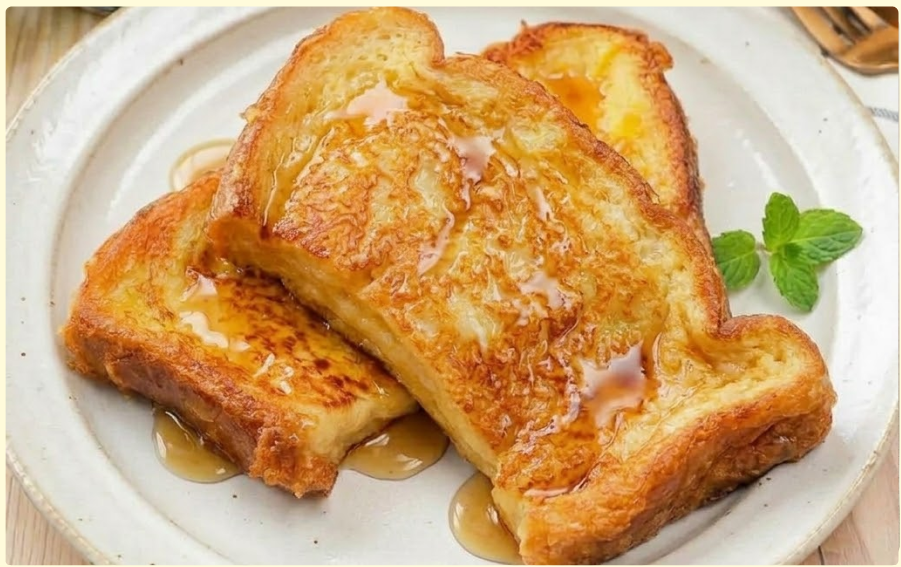
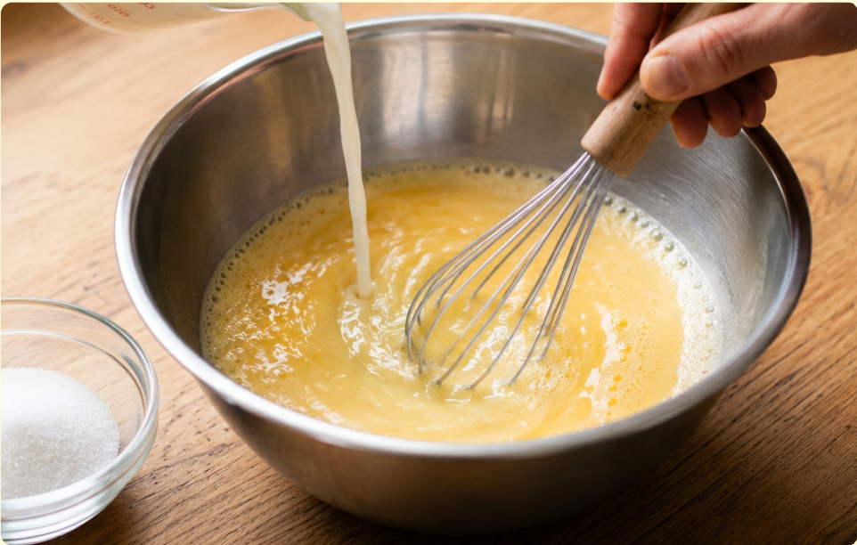
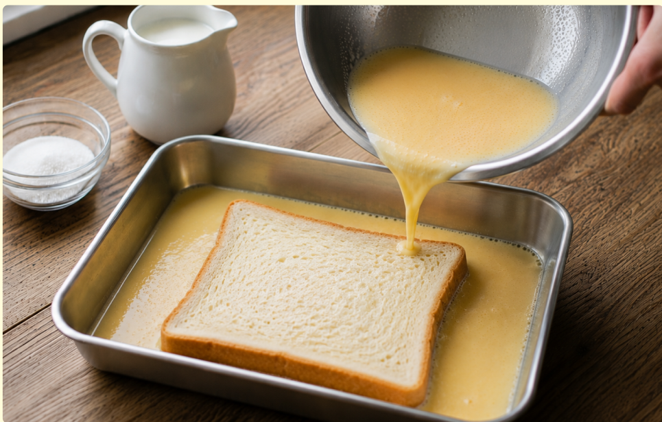
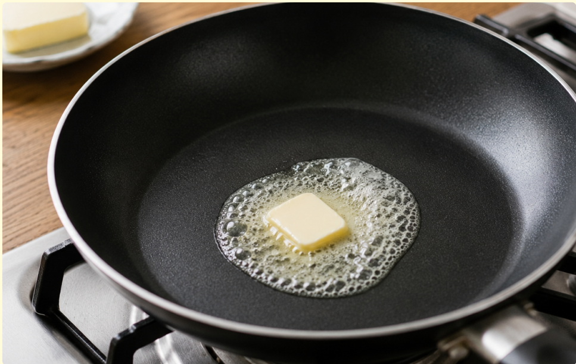
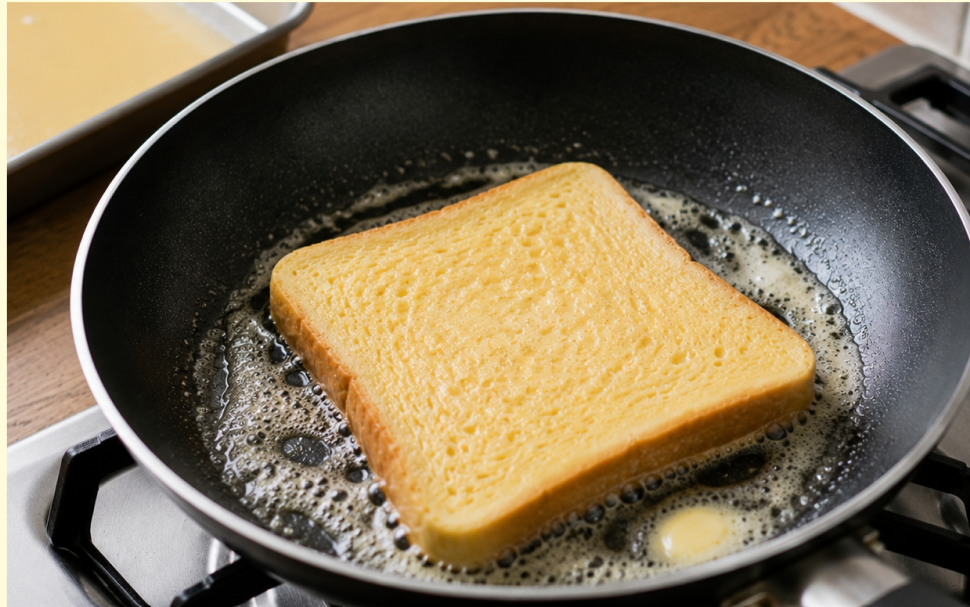
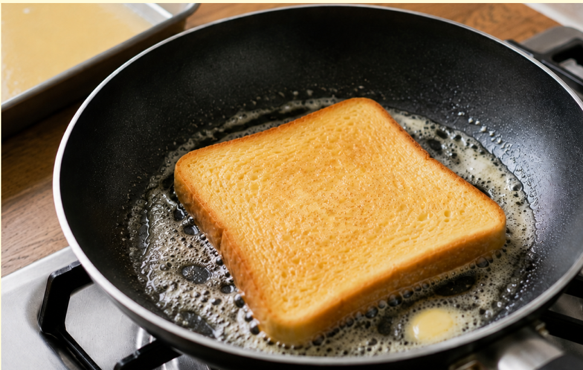
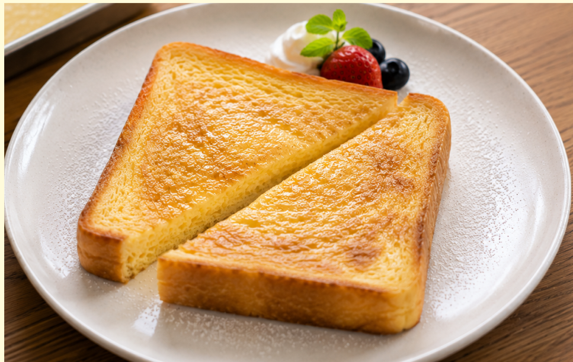

材料（一人分）
- ・食パン1枚
- ・卵1個
- ・牛乳（代用可能）80ml
- ・砂糖大さじ1
- ・バター5g
必要な道具
- ・ボウル
- ・バットか深めのお皿
- ・菜箸または泡立て器
- ・フライパン
- ・お皿
注目ポイント
- 🚫 包丁を使わない
- 🔥 火加減に注意
作り方
① ボウルに卵を割り入れ、よく混ぜます。 しっかり混ざったら牛乳と砂糖を加え、 さらに混ぜます。

② バットまたは深めのお皿に卵液を入れます。 食パンを入れ、片面1〜2分ずつ浸します。 両面に卵液をしっかり吸わせましょう。

③ フライパンを弱めの中火にかけ、 バターを入れます。 バターが溶けて全体に広がったらOKです。

④ 卵液を吸ったパンをそっとフライパンにのせます。 3〜4分ほど焼き、焼き色がついたら裏返します。

⑤ 裏返したらさらに3〜4分焼きます。 両面がきつね色になり、中央まで暖かくなればOKです。

⑥ お皿に盛りつけて完成です。 お好みではちみつやメープルシロップをかけても 美味しく食べられます。

調理のコツ
卵液に浸す時間が短いと、
表面だけに卵液がついて、
中がパサつきやすくなります。
両面をしっかり浸すことで、
パンの中まで卵液がしみこみ、
しっとりした食感になります。
食パンの厚さ
6枚切りの食パンだと、
ふんわりと厚みがでやすくなります。
8枚切りは卵液がしみこみやすく、
初心者にも作りやすいです。
初めて作る場合は
8枚切りの食パンがおすすめです。